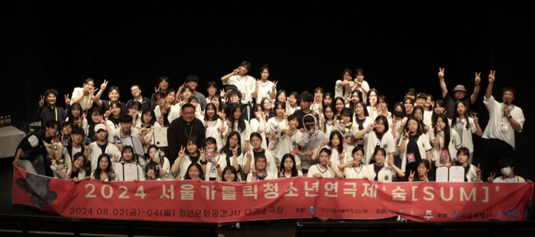

서울가톨릭청소년연극제는 (재)서울가톨릭청소년회가 주최하고 청년문화공간JU가 주관하는 청소년 연극 축제입니다. 경쟁이나 시상보다, 학생들이 직접 자신들의 이야기를 연극으로 표현하는 방법을 배우고 다른 학생들과 함께 작품을 만들어가는 과정 자체에 무게를 두는 장기 프로젝트로서 학생들과 교사, 학부모 모두에게 큰 호응을 얻고 있습니다.
보다 낮은 문턱의 열린 축제 지향
서울가톨릭청소년연극제는 편중되지 않는 다양한 목소리를 담아내기 위해 참가팀 선정에 있어서도 제약을 최소화하고 있습니다. 일반 학교뿐만 아니라 청소년시설, 연합동아리, 대안학교 등 청소년들이 연극으로 함께 뜻을 모은 단체라면 누구에게나 참가기준이 열려있으며 작품 내용면에서도 다채로운 구성을 지향합니다.
청소년들의 진정성 있는 표현을 이끌어내는 자리
참가작 역시 기존 연극 작품을 그대로 답습하기보다 청소년들이 직접 자신들의 생각을 자신들만의 표현으로 써내려간 창작극을 권장함으로써 학생들의 보다 진솔한 목소리에 귀를 기울이고 있습니다. 심사 기준 역시 기성 성인연극에서 기대하는 유려함과 능숙함보다 자신들의 이야기를 얼마나 독립적이고 창의적으로 펼쳐내는지에 중점을 두고 있습니다.
| 사업명 | 서울가톨릭청소년연극제 | |
|---|---|---|
| 장소 | 청년문화공간JU | |
| 대상 | 모든 청소년 | |
| 참가비 | 무료 | |
| 일정 | 추진단위(항목) | 일정 |
| 참가신청 공고 및 접수 | 공고일부터 2026년 4월 3일(금) | |
| 참가신청 접수 마감 | 2026년 4월 3일(금) 자정 | |
| 참가작 선정 및 발표 | 2026년 4월 중 | |
| 창작 워크숍 진행 | 2026년 5월 30일(토) 11시 | |
| 학교방문 진행 | 2026년 6월 ~ 7월 중 | |
| 학교방문 진행 | 2026년 8월 7일(금) ~ 9일(일) | |
| 접수방법 |
①
연극제 참가 신청 방법 ②
제출방법 ②
공연 관람 신청 방법 ②
공연 관람 신청 내용 |
|
| 주최/주관 | (재)서울가톨릭청소년회 | |
| 주관 | 청년문화공간JU | |
| 후원 | 서울특별시, 마포구청(예정) | |
| 문의 | 02-338-7832 | |